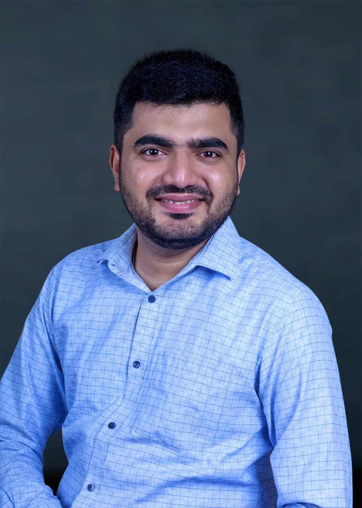

RESPONSIBLE DISCLOSUREJoomla! Core
Joomla! Core
Reflected XSS
Credited discovery of CVE-2022-27913: insufficient input filtering that allowed reflected cross-site scripting in Joomla! CMS components.
CYBER SECURITY RESEARCHER & LEADER
I’m Ajith Menon. I explore how systems fail—and turn that understanding into more resilient applications, infrastructure, and teams.

01 / SELECTED WORK
A selection of vulnerability research, forensic engineering, and adversarial assessment work.
Credited discovery of CVE-2022-27913: insufficient input filtering that allowed reflected cross-site scripting in Joomla! CMS components.
Developed INDRA at C-DAC: a Linux forensic artifact collection and analysis solution for government security operations.
Focused on collecting and analyzing Linux system artifacts to support forensic investigations. This portfolio describes the work at a high level; implementation and operational details are not published here.
Assessed LLM and secure RAG environments for prompt injection, data leakage, model misuse, and adversarial behavior at C-DAC.
Research included evaluating how untrusted input can influence model behavior and examining the boundaries between retrieved content, application instructions, and sensitive information.
02 / AREAS OF FOCUS
Hands-on technical depth, informed by enterprise, government, and critical infrastructure experience.
Web, mobile, API, and network assessments. Threat modeling, secure code review, and security throughout the development lifecycle.
Evidence-led investigation, Linux forensic tooling, root-cause analysis, and translating technical findings into actionable lessons.
Security assessment and specialist training across telecom, SCADA, industrial control systems, and operational technology.
Adversarial assessment of AI systems, secure RAG environments, cloud architecture reviews, and practical vulnerability management.
03 / THE RESEARCHER
A researcher’s mindset.
A practitioner’s perspective.
I work at the intersection of offensive security, digital forensics, and security leadership. My experience spans technology companies, government R&D, financial services engagements, and critical infrastructure.
Today, I lead IT Security at Malabar Group. Previously, I worked at Plume Design and C-DAC, combining security engineering with research and hands-on assessment.
G20 Cyber Defender Award · CERT-In
Course Advisor · ISEA CISO Program
CISM · CEH · CHFI · P1 Security telecom certifications
Senior Manager & Head of IT Security
Senior Security Engineer
Senior Project Engineer
Information Security & R&D
Head of Security Research & Testing
04 / KNOWLEDGE SHARING
Training for government officials, technical teams, and security practitioners. Practical concepts grounded in real-world experience.
Discuss a session ↗Web and mobile application assessment, vulnerability patterns, secure development practices, and practical remediation discussions.
Evidence collection, server-side artifacts, investigation workflows, and connecting technical observations to a defensible root-cause analysis.
Telecom security and industrial environments, with attention to system context, operational constraints, and investigative techniques.
Recognizing social engineering, understanding digital payment fraud, and building safer everyday habits through accessible, interactive sessions.
05 / START A CONVERSATION
For research collaboration, professional opportunities,
and speaking or training enquiries.